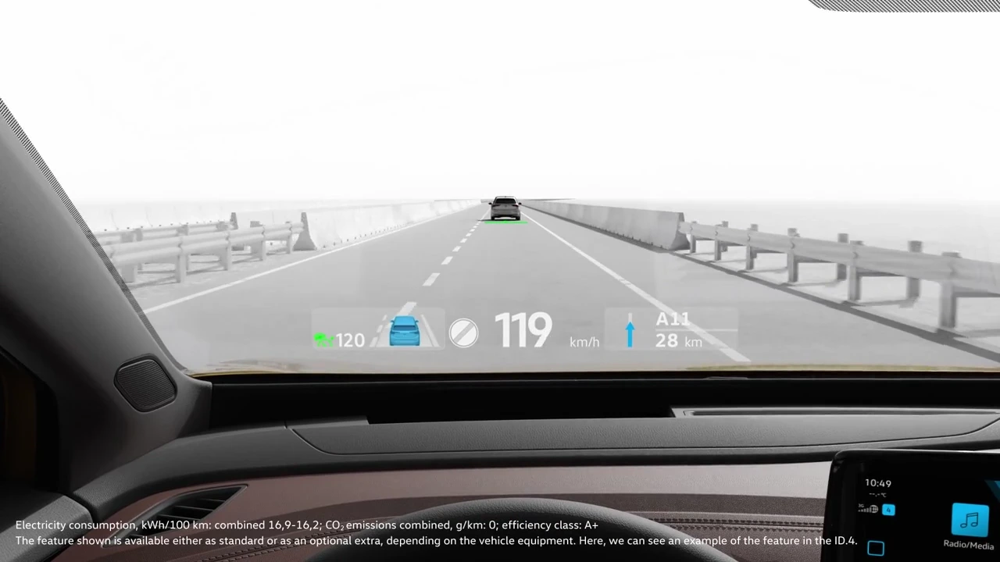
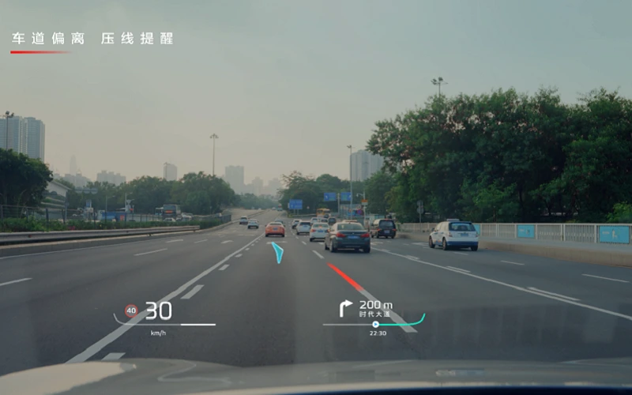
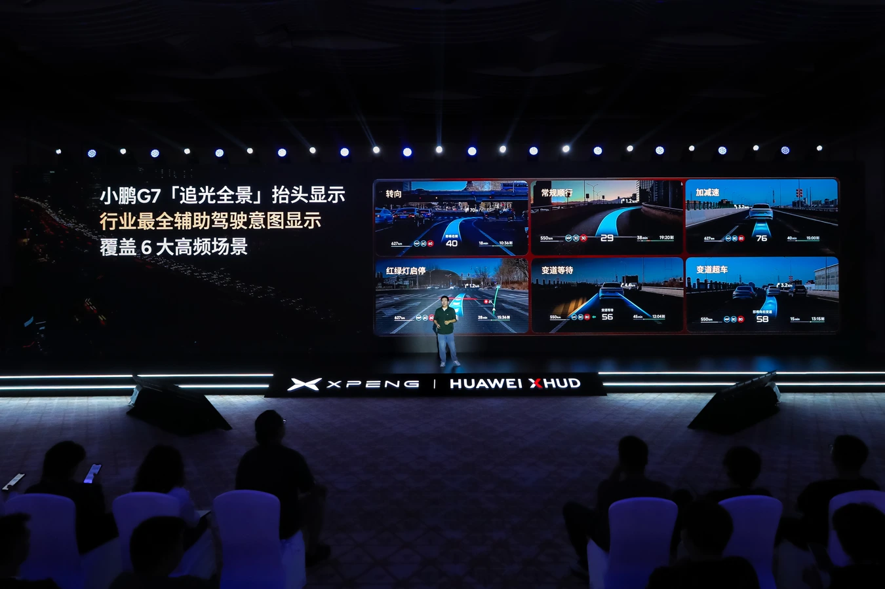
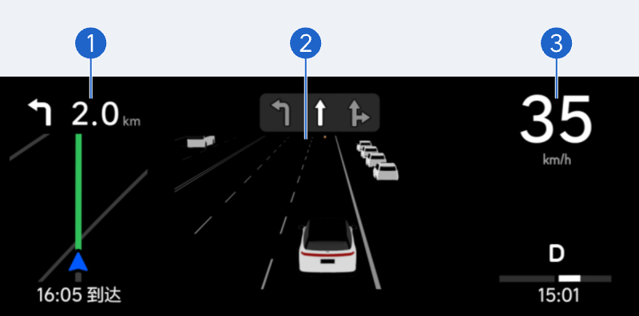
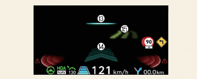
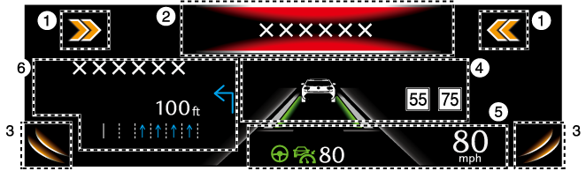
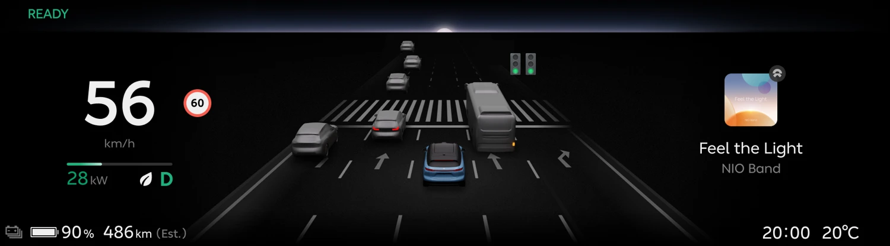
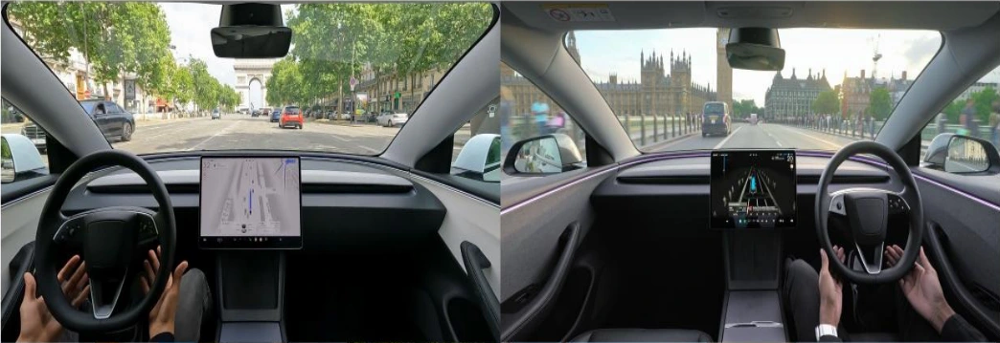
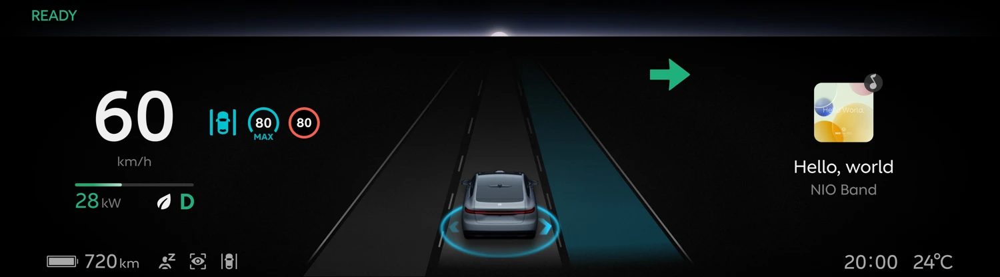
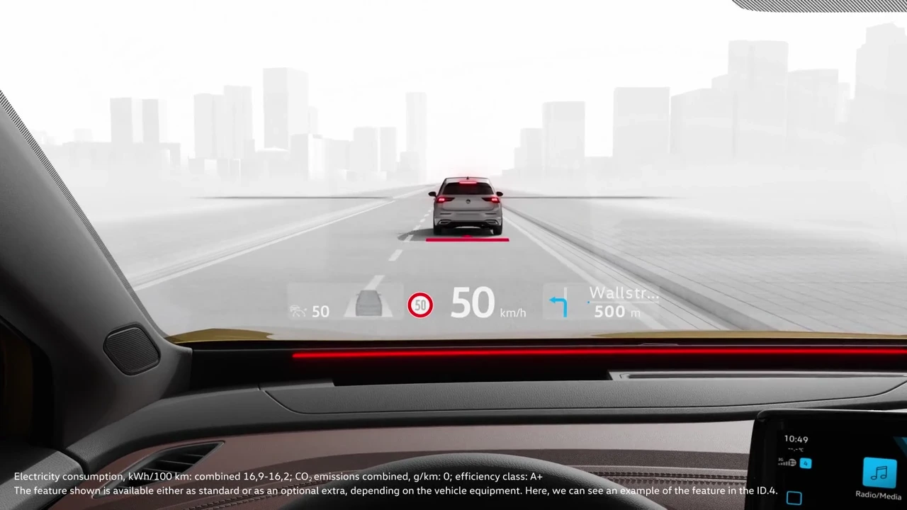

固定提示
ACC、LKA、碰撞预警等可以用图标、车距格数或简化透视车道表达。元素锚定在 HUD 信息区，适合常驻状态和快速确认。此类布局通常没有可定义的三维相机距离。
马自达 CX-90 图例同一个前车或车道，在 HUD 上可以是一条贴近实车的标记，也可以是小画布里的模型。通过量产车型界面、试车图和几何模拟，拆解这些画面各用什么视角，以及能向前看到多远。

ACC、LKA、碰撞预警等可以用图标、车距格数或简化透视车道表达。元素锚定在 HUD 信息区，适合常驻状态和快速确认。此类布局通常没有可定义的三维相机距离。
马自达 CX-90 图例保留实际道路。用驾驶者眼点、风挡标定和环境坐标把少量高亮放到目标附近。水平轴随车辆及系统补偿，俯仰参考光轴和道路姿态。典型样本里的跟车高亮下只有实景车，没有虚拟自车。
大众 ID.4 图例SR（场景重构）把自车、前车与车道画在独立区域。常见正后上方、居中朝前，保留车顶和少量近侧车道。小窗可与车速和地图 TBT 并排。
理想 i8 图例同样多用自车后上方。较大的画布容纳路口、信号灯、邻车道和变道过程。中控还可以跟随面板宽度换构图或缩放，画面观察范围会跟着状态改变。
蔚来 ET7 图例 · 特斯拉测试画面研究口径覆盖中国、欧洲、美国和澳洲的公开发布、试车与车主手册。比较以具体年款、市场和图示状态为准。可观察构图支持视角分类，精确的量产渲染相机外参仍需原始遥测或实车标定。
点开图片可看原尺寸研究素材。每张图都标明是试驾实拍、演示截帧、官方效果图还是手册图例。图中可直接观察的空间线索与配置证据一并列出。
驾驶者视点叠加
前车下方的绿色跟车横条位于道路视角内。车道边界朝道路远端收拢，底部状态带另保留固定的蓝色车辆图标。这两个层分别使用道路坐标和屏幕坐标。
官方说明开启 Travel Assist 时可显示两条绿线，ACC 或 Travel Assist 跟车时可标记前车。
驾驶者视点叠加

并列转向箭头叠在夜间道路上，底部状态带保留速度与辅助状态。读图可见前视实景及远近信息分工。
本图演示导航。手册另列驾驶辅助显示；这帧可用来判断信息层级。
驾驶者视点叠加

彩色叠加沿真实车道展开，两侧车辆仍属于实景。该帧可读驾驶者视点和贴路构图。
联合发布披露投影区域承载安全辅助和多车道 AR 导航。本图主证据为导航叠加。
驾驶者视点叠加

原图把底部状态区与沿道路向前的增强区分开。奥迪同时描述倾斜成像面，适合研究为何平直状态带和远场标记能同时出现。
厂商标注最远 200 m 的可增强区域。增强范围描述涉及虚实叠加，公开文字未给每类 ADAS 目标的显示截断条件。
实景叠加与事件提示

发布会画面并列多个辅助驾驶事件。适合比较对象附近标记、道路提示和固定提示各占多少视觉注意力。
公开发布资料可确认这些场景被展示。通过静态舞台图无法判定量产车每个场景的定位误差或启动距离。
实景组合与场景重构

图中同时有真实道路式底图、车道线、前车和行人标记。注意中心信息区的透视由背景与多个图层共同组成。
手册把第 10 项定义为场景重构车道线与车辆，并描述 ACC／IACC 在指定状态下可标记前车或行人。单帧无法验证道路配准。
独立小型 SR

中央是一块独立道路画布。自车在底部、前车依次缩小，左侧地图和右侧车速各自保持稳定。可直接观察到居中跟车构图和向下看车顶的视觉线索。
在该图里 HUD 承载的是多任务组合。中央环境画面的可见车道几何可供构图对照，数值外参未披露。
独立小型 SR

中间路型和车辆组成一个局部模型，导航条与车速采用屏幕固定坐标。前方的道路元素集中在画布中心，旁侧信息在边缘。
该车型手册同时列有 AR 模式，可以在同一款车上对照屏幕固定构图与道路增强提示。
事件式 AR

手册拆解 AR 车道、目标与提示符号。道路相关标记被单独列出，便于和标准模式里的环境小窗比较。
图为功能图例。实际配准位置须结合驾驶者眼点和场景实测。
图标与固定透视符号

车道／跟车符号集中在固定信息区，车速与两侧告警常驻不同位置。线条有透视造型，图中可识别的是符号组合和分区。
HUD 在较小区域也能交代驾驶辅助状态。图例未给可用于求解虚拟相机的道路测量基准。
驾驶员方向实景叠加

风挡内可见沿高速道路方向的绿色箭头和下方状态信息。保留 A 柱和路面，适合观察实际相机视点与 HUD 图形的尺度关系。
这帧用于观察实车 HUD 外观。它演示导航，车机功能规格应结合车型配置。
仪表扩展 SR

画面下部是自车，上方包括多车道、斑马线及信号灯。比 HUD 小型 SR 有更完整的道路语义，也保留固定车速位置。
官方辅助变道附图使用侧向目标车道高亮。它适合比较事件主导的高亮变化和稳定的视角。
可变版式 SR

中控以独立三维场景呈现道路和交通对象，画面旁有真实道路供辨认。车型和软件版本以报告公开信息为限。
Model 3 手册另外描述视觉化面板可展开至中控、更改宽度和双指缩放。测试画面可作构图参考，横向覆盖需跟随具体视口。
| 案例 | 显示视角 | 公开光学规格或数据状态 | 前向显示距离 |
|---|---|---|---|
| 大众 ID.3／ID.4 | 驾驶者视点叠加 | 光学近场约 3 m／远场约 10 m。远场对角 1.8 m，按简化几何推算对角约 10.3°。 资料 ↗ | 前向道路米数未公开 |
| 奔驰 S 级 W/V223 | 驾驶者视点叠加 | 光学 10° × 5°，VID 约 10 m。 资料 ↗ | 前向道路米数未公开 |
| 飞凡 R7 | 驾驶者视点叠加 | 光学 13° × 5°，VID 7.5 m。 资料 ↗ | 前向道路米数未公开 |
| 奥迪 Q6 e-tron | 驾驶者视点叠加 | 公开资料给出 88 英寸等效区域。引用资料未披露 H/V FOV 和 VID。 资料 ↗ | 厂商标注可增强区域最远 200 m |
| 小鹏 G7 | 实景叠加与事件提示 | 小鹏官方公告给出 87 英寸等效画幅、10 m VID。H/V FOV 未核得。 资料 ↗ | 分场景道路米数未公开 |
| 深蓝 S07 | 实景组合与场景重构 | H/V FOV 与 VID 未核得。 资料 ↗ | 前向道路米数未公开 |
| 理想 i8 | 独立小型 SR | 来源未给可用于本图的 H/V 光学 FOV。 资料 ↗ | SR 前向米数未公开 |
| 起亚 EV6 · 标准 | 独立小型 SR | 图中光学 FOV 与焦面未核得。 资料 ↗ | SR 前向米数未公开 |
| 起亚 EV6 · AR | 事件式 AR | 图中光学 FOV 与焦面未核得。 资料 ↗ | 分事件道路米数未公开 |
| 马自达 CX-90 | 图标与固定透视符号 | 此手册图例未给光学 FOV 和 VID。 资料 ↗ | 固定符号无需定义道路米数 |
| 凯迪拉克 VISTIQ | 驾驶员方向实景叠加 | 本样本未核得该配置 H/V FOV 和 VID。 资料 ↗ | 前向道路米数未公开 |
| 蔚来 ET7 | 仪表扩展 SR | 实体仪表屏。虚拟相机 HFOV/VFOV 未公开。 资料 ↗ | SR 前向米数未公开 |
| 特斯拉 FSD（Supervised） | 可变版式 SR | 实体中控屏。虚拟相机 HFOV/VFOV 未公开。 资料 ↗ | 测试帧无道路真值 |
SR 样本的水平偏角、俯视角、相机高与后退量、渲染 FOV 均无可核对的原厂设定。实景 AR 的前视构图需用驾驶者眼点和配准描述；具体光轴中心相对地平线的俯角仍需光机资料。矩阵中「未核得」指当前引用资料未提供。
中国样本中，飞凡 R7 采用贴实景 AR，理想 i8 在 HUD 上保留局部 SR，深蓝 S07 的手册展示了道路重构与目标提示。海外样本中，大众、奔驰、奥迪以实景增强为主，起亚同时提供标准与 AR 两种呈现，特斯拉把更丰富的 SR 放在中控。最明显的差异来自屏幕载体、版本与任务，同地区也会并存多种做法。
HFOV／VFOV 是设计眼点处，虚像左右／上下边缘所张开的全角。中心俯角是视场中心低于水平线的角度。光机规格给出 10° × 5° 时，仍需要中心俯角与眼点高度才能推算落地范围。
VID 是眼睛感知清晰虚像的焦面距离，单位为米。多焦面 HUD 可把车速与道路增强放在不同焦面。图形显示在 40 m 处的车辆附近时，光学焦面仍可能只有约 10 m。
假设居中、同一深度平面且忽略挡风玻璃边缘裁切，距离 d 处横向可用宽度为 W = 2d·tan(HFOV/2)。如要覆盖右邻道，还要从此宽度扣掉眼点偏置、目标偏航和安全留边。
假设平路，眼高 e、光轴向下 α，则纵向近端约为 e / tan(α+VFOV/2)。上边缘朝下时，远端约为 e / tan(α−VFOV/2)。上沿看向地平线或天空时，几何远端无上界。
| 光学水平全角 | 20 m 处 | 40 m 处 | 80 m 处 | 应用 |
|---|---|---|---|---|
| 10° | 3.50 m | 7.00 m | 14.00 m | 奔驰 W/V223 的公开全角示例 |
| 13° | 4.56 m | 9.11 m | 18.23 m | 飞凡 R7 的公开全角示例 |
按眼高 1.2 m、中心向下 3°、VFOV 5° 建立示例，平路交点约为 12.5–137.5 m。中心向下 2.5° 时上边缘正对地平线。实际图形还需要通过眼盒、风挡裁切、道路坡度、俯仰姿态、遮挡、目标置信度和事件窗口检查。
两个容易混用的数字来自大众与奥迪。大众约 10 m 指其首发远场虚像距离；奥迪的 200 m 来自可增强区域描述。若仅已知对角尺寸 L 和同一平面 VID d，可用 2·atan(L/2d) 求近似对角角度。大众示例可算约 10.3°，小鹏 87 英寸、10 m 可条件性算约 12.6°；H/V 仍要源画幅比例或原厂标定。
虚拟自车的地面参考点设为原点，X 横向向右，Y 竖直向上，Z 沿车头。无横向平移的相机位于 (0, h, −D)，地面为 Y = 0。
| 参数 | 定义 | 调参时观察 |
|---|---|---|
| 水平偏角 ψ（yaw） | 相机朝向相对自车车头的平面旋转。0° 朝正前，正角向右。水平偏角和水平视野角是两个独立参数。 | 道路汇聚点是否偏离中央、左右邻道是否对称。偏移视点位置也会造成不对称，需同步记录相机横移。 |
| 向下俯视 θ（pitch） | 相机中心射线向下倾斜的角度。正值越大越俯视。roll 为绕相机视轴旋转，前进巡航样机通常先设 0°。 | 车顶可见面积、近侧车道、地平线与远处目标。保持 FOV 不变时，增加俯角一般会缩短可见纵深。 |
| 相机后退 D／高度 h | 两者相对自车地面参考点。直线距离为 √(D²+h²)。三维相机也可通过位置与 look-at 点定义。 | 后退决定自车在视域中的位置，高度改变道路截取范围。改变一项后复核自车底部安全留白。 |
| 渲染 VFOV／HFOV | 虚拟镜头角度。对称针孔模型、有效视口宽高比 A 时，HFOV = 2·atan(A·tan(VFOV/2))。 | 横向目标和远处目标大小。保留 VFOV 增宽视口会增加 HFOV；固定 HFOV 则会改变纵向可见范围。 |
| 前向显示距离 | 区分中心竖切面地面交点、图形渲染截断 Zcap，以及目标达到可辨尺寸的最远点。 | 记录道路边界、规划路径、前车、行人各自的可见距离。优先显示对象和有效数据会随状态改变。 |
对于 0° 水平偏角，先从相机在地面上的投影点出发。视轴命中点 Z₀ = h/tan(θ) − D，近、远边界分别为 Znear = h/tan(θ+VFOV/2) − D 和 Zfar = h/tan(θ−VFOV/2) − D。若上边缘角 ≤ 0°，由渲染截断、场景数据与读图能力确定远处可见内容。负的近端表示下缘跨到自车地面参考点后方。
水平偏角不为 0° 时，中心竖切面射线的水平地面距离 ρ 取 h/tan(该射线俯角)，可得 X = ρ·sinψ、Z = ρ·cosψ − D。这仍是中心竖切面的结果。求斜侧画面全部地面范围时，需要对四角射线与路面分别求交；地形变化时换成三维道路面。
独立 SR 可能使用非线性距离压缩、不同缩放的车模、曲面车道或动态裁切。只有在道路标定与固定 FOV 有依据时，才把图中像素换算成米。针孔模型里，宽度为 w 的正面目标约占 fₓ·w/zcam 像素，zcam 为相机深度。举例，同样的 46.4° HFOV 下，320 px 宽的画布具有约 373 px 的水平焦距，宽 1.8 m 的目标在 50 m 相机深度约占 13 px，宽 0.6 m 的目标约占 4.5 px。采用符号放大和高亮后，可辨距离还要考虑其它图层遮挡和观看条件。
以下为平路针孔模型。预设只是设计起点，用于试验 HUD 小窗、仪表和中控的构图差异。车间距、相机角和绘制上限都可独立调节。
自车模拟交通对象距自车纵向刻度
读数取中心竖切面，并受绘制上限约束。侧边区域和抬高的目标可能越过中心地面交点。
| 方案 | ψ | θ | h／D | VFOV（比例） | 几何远端 |
|---|---|---|---|---|---|
| HUD 小型 SR | 0° | 18° | 3.4／10.0 m | 30°（8∶5） | 约 54.9 m |
| 仪表巡航 | 0° | 24° | 6.0／7.5 m | 40°（16∶9） | 约 78.3 m |
| 中控城市 | 0° | 32° | 9.0／9.0 m | 54°（16∶9） | 约 93.9 m |
保持 HUD 预设的高度、后退和 VFOV，俯角从 17°、18° 增至 19°，几何远端依次约为 87.4、54.9、38.6 m。上边缘越接近地平线，每度俯角造成的距离变化越大。界面评审宜固定参考姿态，并另设绘制上限。
原型评审可先测试一组 0° 正前视，再以 ±5° 比较中轴偏移。HUD 小窗可以试验 16°–22° 俯视、26°–34° VFOV；仪表或中控可以从 23°–37° 俯视、38°–60° VFOV 起步。成对调整俯角与 VFOV，保持所需的上沿俯角与前视范围；以自车是否完整、邻车是否可见、前方对象是否达到最小尺寸筛选组合。这些是原型扫描范围，处于同一范围的任意组合也会产生不同的可见距离。
这套透视相机复现上方「HUD · 小型 SR」预设。把自车模型底面的参考点放在原点，按下表设置，便可用它搭建三维辅助驾驶画面。
| 设置 | 推荐输入值 |
|---|---|
| 相机位置 | 自车中心线，后退 10.00 m，抬高 3.40 m。以 X 向右、Y 向上、Z 向车头为轴，坐标是 (0, 3.40, −10.00) m。 |
| 角度与观察点 | 水平偏角 0°，向下俯视 18°，横滚 0°。相机中心对准自车前方 0.464 m 处的地面点。 |
| 透视镜头 | 垂直 FOV 30.00°，水平 FOV 46.41°。36.00 mm 水平片门配 41.99 mm 焦距。镜头移轴 X／Y 为 0，关闭景深。 |
| 渲染画幅 | 1920 × 1200 px（8∶5），方形像素。更换宽高比后需再核对水平和垂直 FOV。 |
| 距离与裁切 | 相机近／远裁切面为 0.12／200 m。平路中心竖切面的远交点距自车 54.88 m，场景内容按自车前向坐标限到 60 m。 |
在 Scripting 工作区打开下载的脚本并运行。脚本创建一份独立场景和相机。手工录入时，若 +Y 是车头、+Z 向上，相机位置设为 (0, −10, 3.4) m，XYZ 欧拉旋转设为 (72°, 0°, 0°)，Sensor Fit 选 Horizontal。
导入 .usda，启用 Cameras，选用 SR_Camera。若导入器只读取相机，在输出设置里填 1920 × 1200。Cinema 4D 手工设置可用 36 mm Film Gate、41.99 mm 焦距。如果 Y 向上、+Z 为车头且以厘米建模，相机放在 (0, 340, −1000) cm，正向指向 (0, 0, 46.4) cm。
该组数值用于 HUD 界面内的三维场景重构。导入后可在自车前方 10、30、50 m 各放一个标记，核对画面纵深。0.12／200 m 从相机量起，60 m 是从自车原点量起的前向内容上限，可在场景逻辑中单独控制。
以下归一化读数以原图外边界为基准，左上角为 (0,0)，右下角为 (1,1)。下图标出自车与参考区域的读图点。图例、裁切和画布边界的选择都会改变读数。


理想 i8 读数可复核。800 × 385 px 图片上取左侧线段近点 (327, 362)、远点 (391, 172)，右侧取 (475, 361)、(420, 171)。两条延长线交于约 (407, 125) px。这个交点说明样本沿中轴汇聚；上方有原图标注边、方向牌及裁切，角度反解仍需实际渲染视口和 FOV。自车位置和交点坐标均取屏幕比例。
fᵧ = H / [2·tan(VFOV/2)]，θ ≈ atan((cᵧ−vᵧ)/fᵧ)。示例：消失点在视口 0.20H，cᵧ=0.50H，VFOV 取 25°／35°／45°，则 θ 分别约为 7.6°／10.7°／14.0°。这些是输入假设的数值，车型图例不具备完整输入。ψ ≈ −atan[(vₓ−cₓ)·cosθ/fₓ]。要反求相机后退和高度，至少需要标定内参、已知尺度的共面点与实际自车参考点。可用多组车道宽、纵向标记和同一时刻的目标真值约束，报告误差或置信区间。| 场景 | HUD 优先表达 | 仪表／中控可以补充 | 试车关注 |
|---|---|---|---|
| 直路巡航／ACC 跟车 | 固定设定车速、跟车状态；有可靠定位时提示主目标。小型 SR 保持自车水平居中。 | 完整显示当前车道、侧向目标和反复切入切出。 | 有无主目标、邻车并行、短时丢目标、自车附近的符号是否跳动。 |
| 车道维持／偏离 | 以两侧路沿或单侧标记为主；弱定位下可用固定侧向告警。 | 标出弱识别车道、接管原因或车道边界变化。 | 单边缺线、弯道、坡道、雨夜；确认状态变化前后的画面不误导。 |
| 辅助变道／高速匝道 | 提示方向和关键冲突；保留稳定正前视角，目标不在 HUD 内时保留状态提示。 | 按任务留更多横向视野，明确目标车道、后侧来车和规划路径。 | 确认何时预告、执行和取消，检查左右可见性、自车锚点、缩放与变道状态时间线。 |
| 复杂路口／低速 | 保留少量高优先级风险、转向或即将到达提示。 | 提高俯视角、加强近侧可见性，显示路口几何与弱势交通参与者；停车阶段可进入独立环视。 | 横穿、遮挡、狭窄道路，核对每类目标的绘制范围与风险高亮。 |
| 碰撞或接管告警 | 有可靠空间锚点时在目标附近表达；固定告警区提供稳定位置，优先级高于路线装饰。 | 复用明确的状态语言，必要时用音频、方向盘或座椅触觉同步。 | 告警出现、确认、消退的完整流程；强光、弱光、眼高、配准下降与图层遮挡。 |
用时间窗口校核前视范围。时速 v 换成 m/s 后，目标距离约为速度乘预告秒数。3 s 在 60／100／120 km/h 时分别约为 50／83／100 m。若任务希望在高速提前 3 秒告知下一步，交互预设几何远端约 55 m 的小 SR 在 100 km/h 只对应约 2 秒的静态道路纵深。可用固定 TBT 或预告提示提供更早通知，并让 HUD 小窗保留近场关系。
交付规格建议。每种载体明确投影坐标系、基准姿态、相机与有效视口、裁切规则、各类目标的出现和可辨范围、状态锁定与降级方式。用模拟定视角，用实车复核眼盒与配准，用逐帧记录核对高速、分合流、坡顶、遮挡和日夜条件。